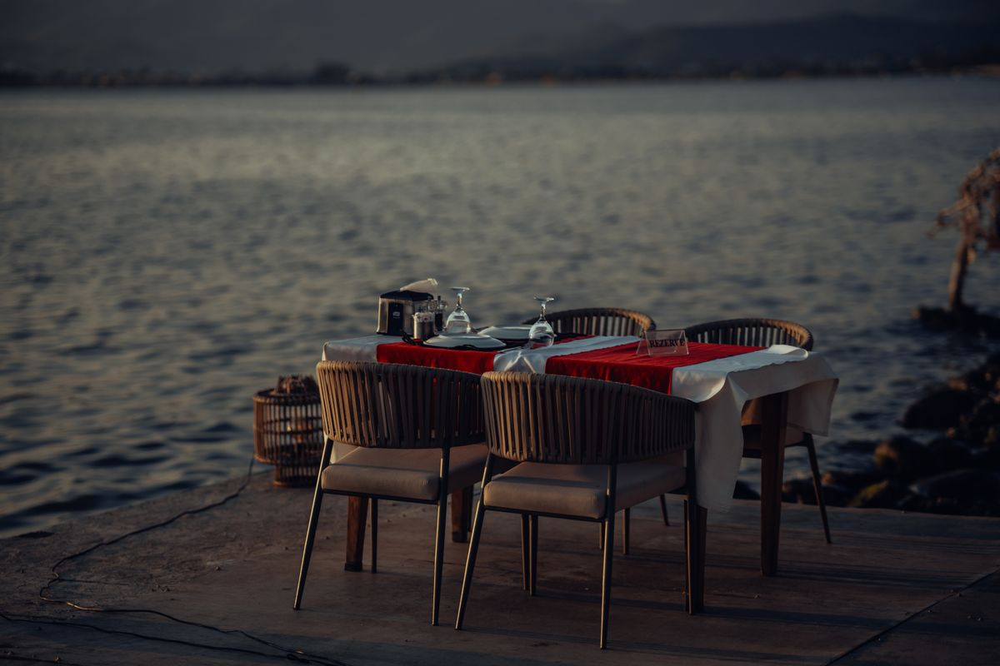
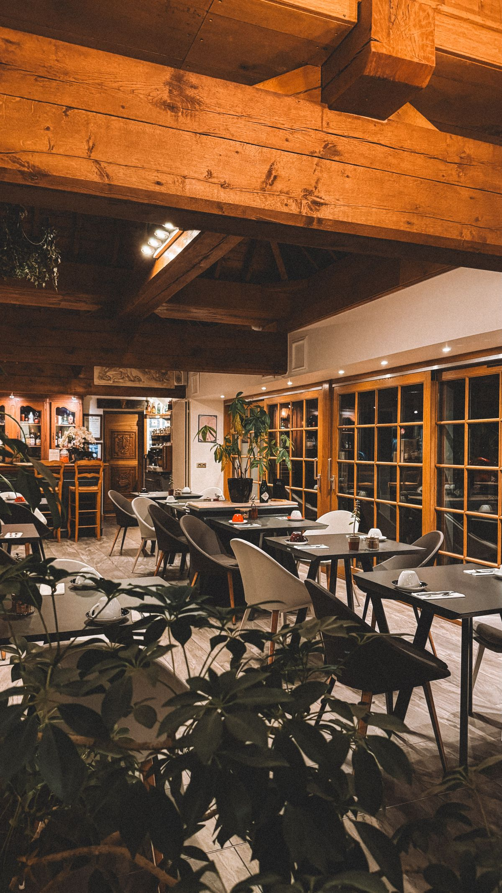
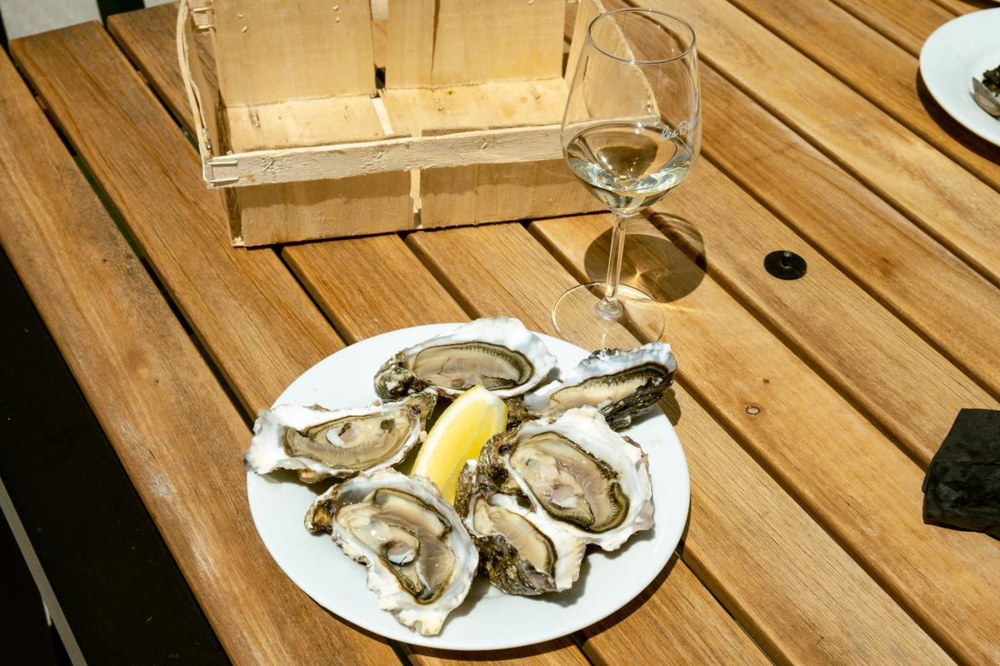
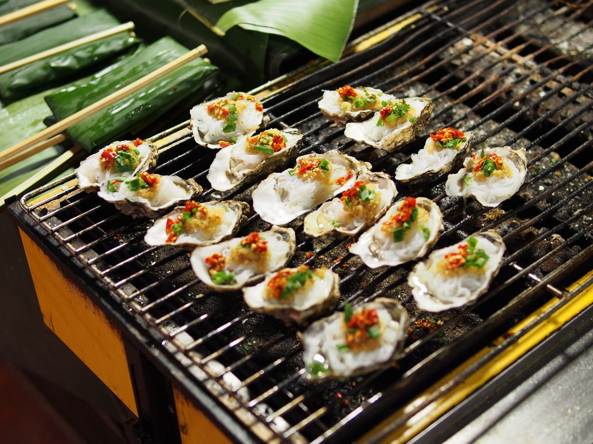
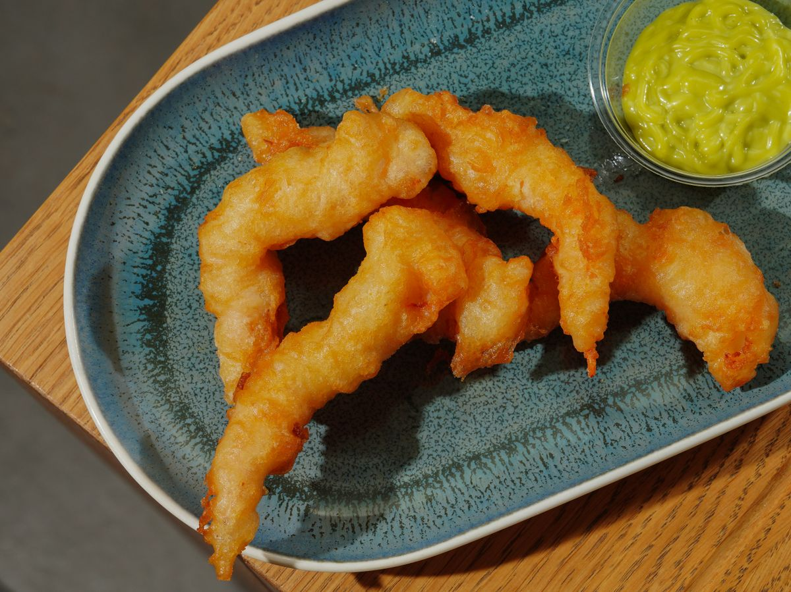
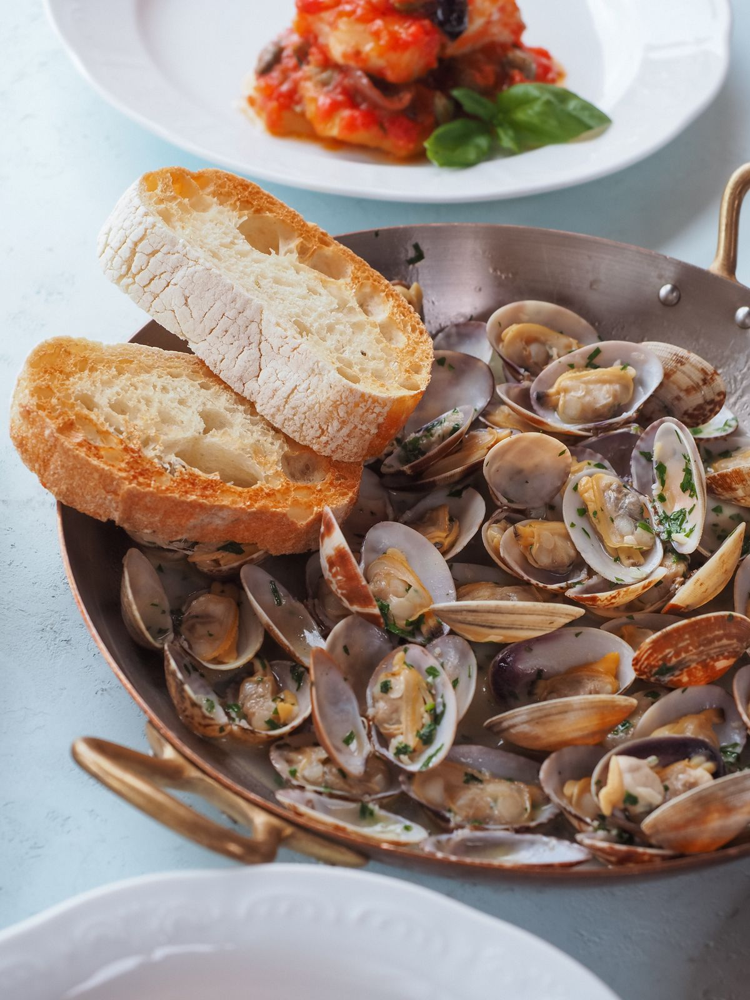
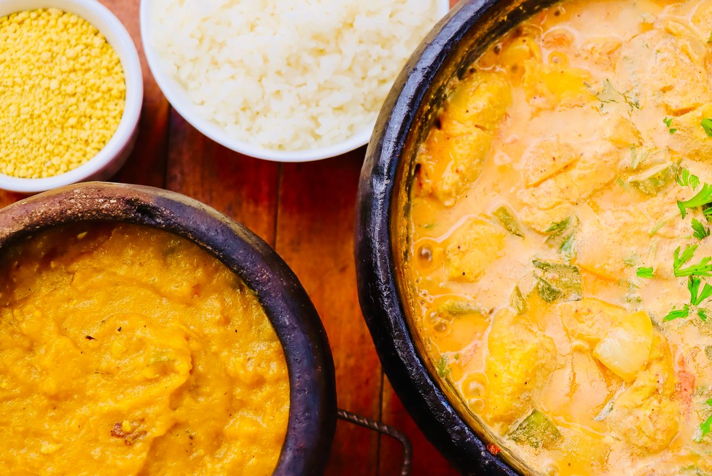

Galeria de fotos
Um pouco do deck, do salão e dos pratos. Clique numa miniatura para ver a foto maior.








Um pouco do deck, do salão e dos pratos. Clique numa miniatura para ver a foto maior.






